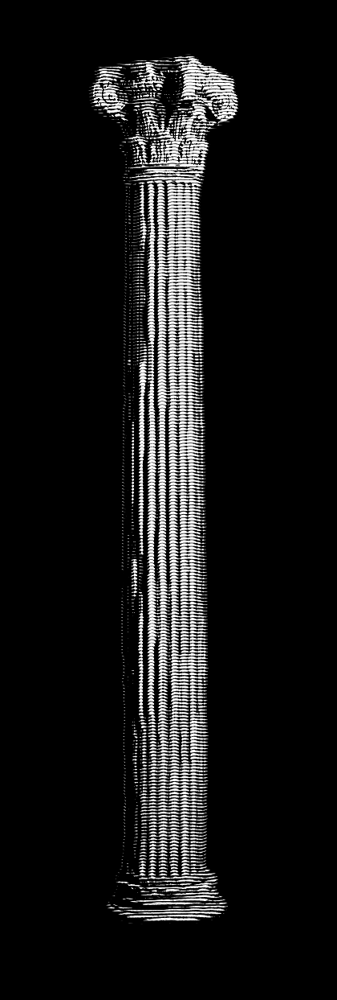
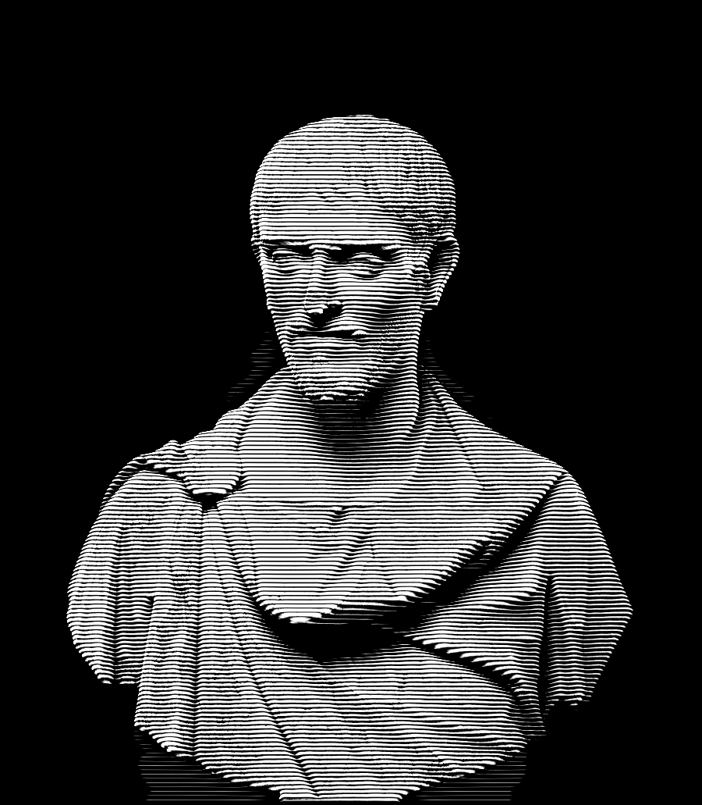
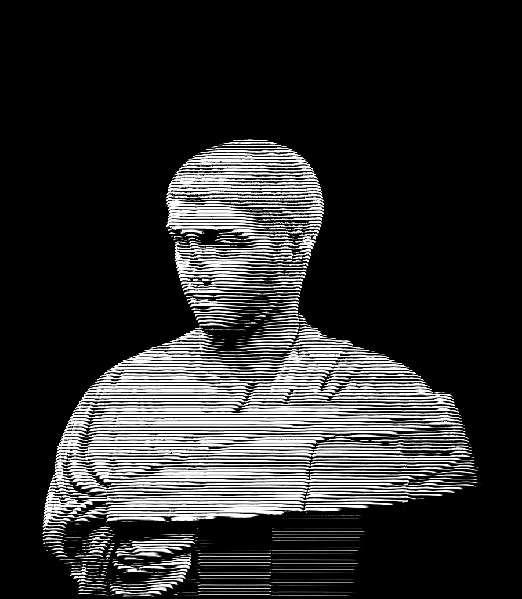
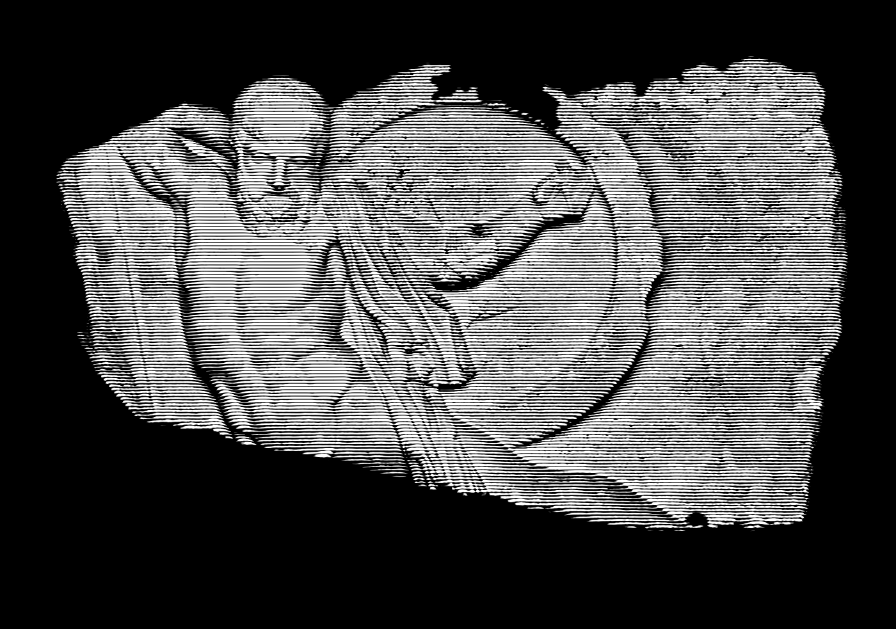

AutoML that runs on your own computer.
Give it a table and the column you want to predict. Vixana trains many models, tests each one on rows it has not seen, and joins the best into one predictor you can keep.
Free for noncommercial use. Desktop app for Linux and Windows; command line for Linux, macOS and Windows.

Download
The desktop app sets itself up on first start, a few minutes once, then opens in seconds. The command line installs into your home folder and needs no administrator rights.

Windows
Download for WindowsTerminal
curl -fsSL https://vixana.example/install.sh | sh
irm https://vixana.example/install.ps1 | iex
Installers are not code-signed yet, so Windows SmartScreen may ask you to confirm. Read install.sh or install.ps1 before you run them.
How a run works
Every run goes through the same five steps, inside the time you give it.
-
Screen
Each candidate model gets a short trial on your data. The weak ones stop there.
-
Validate
The rest train on folds of the data and are scored only on rows they did not see.
-
Stack
A second level of models learns from the first level's predictions on unseen rows.
-
Select
Ensemble selection keeps the blend of models that scores best, and drops the others.
-
Calibrate
Probabilities are tuned so that 0.8 means right about eight times in ten.
Two engines

CPU
Vixana Core 5.7.1
Runs on any computer. Gradient-boosted trees, neural networks and a pretrained tabular model, stacked and blended.

GPU
Vixana G-final
The same pipeline plus a pretrained foundation model on an NVIDIA GPU. 4 GB of graphics memory is enough.
Tested in the open
Against the five leading AutoML systems, on 30 tables it had never seen, Vixana G-final won under rules written before the test began.
- 25 · 3 · 1
- Wins, losses and ties against AutoGluon 1.6.3 best quality, with a median gain of 3.9%.
- 5 of 5
- Systems beaten under the same rules: AutoGluon (best and extreme presets), FLAML, H2O, LightAutoML and MLJAR.
- 585
- OpenML datasets the project had already used or downloaded while building Vixana. All were excluded before the 30 test tables were drawn.
Five minutes per table, 2 CPU threads and a 4 GB GPU, the same for every system. One of the 30 tables was set aside by the registered rule after G-final hit its 8 GB memory cap there, and the CPU engine did not reach the bar against AutoGluon. The paper reports both.

Questions
Does my data leave my computer?
No. The desktop app and the command line train on your machine. The only network use is the first-time install of the engine's packages and signing in with Google.
Is Vixana free?
Yes, for noncommercial use: personal projects, research, study and teaching. It is released under the PolyForm Noncommercial License 1.0.0. For commercial use, contact the author.
Do I need a graphics card?
No. The CPU engine runs anywhere. The GPU engine needs an NVIDIA card with 4 GB or more and is used when you choose it.
Is there a Mac app?
Not yet. On a Mac, install the command line with the terminal command above; it runs the CPU engine.
What does the install command change?
It puts Vixana and its Python environment in one folder in your home directory and adds a
vixana command to your user path. Nothing outside your user account is touched. To remove it,
delete that folder and the command.
Why do I sign in with Google?
So the app and a shared Vixana server know who you are. Vixana receives your name, email address and picture, and nothing else from your Google account.